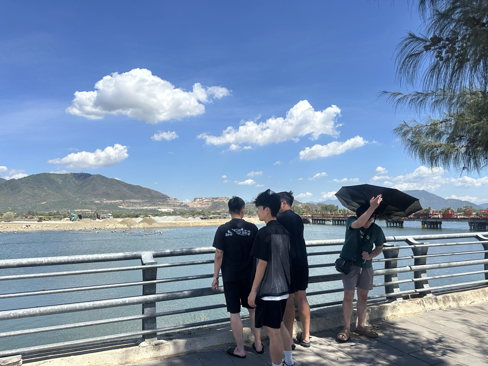

Tháng 10 có ba phiên đấu giá lớn ở Nha Trang — đọc quy chế đấu giá trước khi đọc giá khởi điểm
Nối tiếp bài hàng phát mại hôm 25/9, tháng này có ba phiên đấu giá thật diễn ra liên tiếp ở Nha Trang. Tôi tra lại thông báo gốc của cả ba, và một trong số đó hé lộ một tín hiệu đáng chú ý hơn cả giá khởi điểm.

Giá khởi điểm chỉ là một dòng trong thông báo đấu giá — bốn dòng còn lại mới quyết định rủi ro thật.
Ba phiên, ba loại tài sản khác nhau
| Ngày đấu | Tài sản | Giá khởi điểm | Người có tài sản |
|---|---|---|---|
| 14h, 9/10/2026 | Thửa 350, tờ 41, Lương Sơn 3 (Bắc Nha Trang) — 26.247 m² | 6.786.800.000 đ | Ngân hàng MSB uỷ quyền |
| 10h, 22/10/2026 | Nhà đất số 30 Tô Vĩnh Diện, Tây Nha Trang — thửa 172 | 60.827.132.000 đ | Tài sản thừa kế, theo bản án — Thi hành án dân sự tỉnh |
| 9h, 26/10/2026 | Thửa 365, tờ 28, Bắc Nha Trang | 2.606.420.000 đ | Công ty H2SOFT — thi hành án |
Cả ba đều không phải đất tỉnh đưa ra đấu giá — đây là tài sản ngân hàng xử lý nợ hoặc tài sản thi hành án, khác hẳn với các phiên đấu giá quyền sử dụng đất công tôi từng viết trong bài đấu giá đất Khánh Hòa.
Một thửa đất đã ba lần hạ giá — tín hiệu đáng chú ý nhất
Khi tra lại lịch sử của thửa 350, tôi thấy đây không phải lần đầu được đưa ra đấu:
| Lần đấu | Giá khởi điểm |
|---|---|
| 12/8/2026 | 7.520.000.000 đ |
| 28/8/2026 | 7.144.000.000 đ |
| 9/10/2026 | 6.786.800.000 đ |
Ba lần rao trong chưa đầy hai tháng, giá khởi điểm giảm dần — tổng cộng khoảng 10% so với lần đầu. Diện tích thửa này chưa được công bố rõ loại đất, nên tôi không quy ra đơn giá/m² để so sánh. Nhưng việc một tài sản ngân hàng phải liên tục hạ giá mới tìm được người mua là một chỉ dấu thật về sức mua ở khu vực Bắc Nha Trang hiện tại — không phải suy đoán.
Bốn dòng phải đọc trong quy chế, trước khi đọc giá khởi điểm
- Tiền đặt trước là bao nhiêu, và mất trong trường hợp nào? Phiên 30 Tô Vĩnh Diện yêu cầu đặt trước 12 tỷ đồng — gần 20% giá khởi điểm, cao hơn hẳn mức 10% phổ biến ở hai phiên còn lại.
- Hiện trạng bàn giao ra sao — có người đang ở, đang tranh chấp không? Tài sản 30 Tô Vĩnh Diện là tài sản thừa kế của ba cá nhân, xử lý theo một bản án dân sự — loại tài sản này luôn cần hỏi kỹ về người đang sử dụng và khả năng bàn giao thực tế trước khi đặt cọc.
- Nghĩa vụ thuế, phí và các khoản nợ kèm theo tài sản — ai chịu? Cần hỏi rõ trong hồ sơ đấu giá, không phải tự suy đoán theo quy định chung.
- Thời hạn nộp đủ tiền sau khi trúng đấu giá là bao lâu? Thời hạn ngắn mà chưa thu xếp đủ vốn là rủi ro mất tiền đặt trước.
Khác biệt với đấu giá đất công
Đấu giá đất công do tỉnh tổ chức thường có quy chế rõ ràng, tài sản sạch về mặt pháp lý và hiện trạng. Tài sản ngân hàng xử lý nợ hoặc tài sản thi hành án thì khác: giá khởi điểm phản ánh giá trị thu hồi nợ hoặc giá trị theo bản án, không phải giá thị trường tự do — và rủi ro về hiện trạng, người đang sử dụng cao hơn hẳn. Đây là điều tôi đã nhắc trong bài hàng phát mại 25/9, và ba phiên lần này là ví dụ cụ thể để đối chiếu.
Thông tin đấu giá lấy từ thông báo công khai trên Báo Đấu thầu, tra cứu ngày 2/10/2026. Bài mang tính kiến thức chung, không phải lời mời hay tư vấn tham gia bất kỳ phiên đấu giá cụ thể nào — anh/chị cần đọc toàn văn quy chế và kiểm tra hiện trạng thực tế trước khi quyết định.
"Rồi, ngày mới tốt lành nhé."
Sống tử tế · Kiếm tiền hạnh phúc · Cho đi giá trị
Đang cân nhắc tham gia một phiên đấu giá tài sản?
Gửi tôi thông tin phiên đấu giá — tôi giúp anh chị rà bốn dòng quan trọng trong quy chế trước khi đặt cọc. Miễn phí.
Nhắn Zalo — 0869 668 638